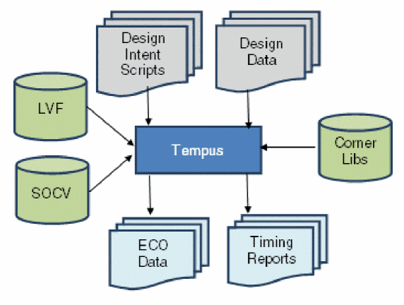
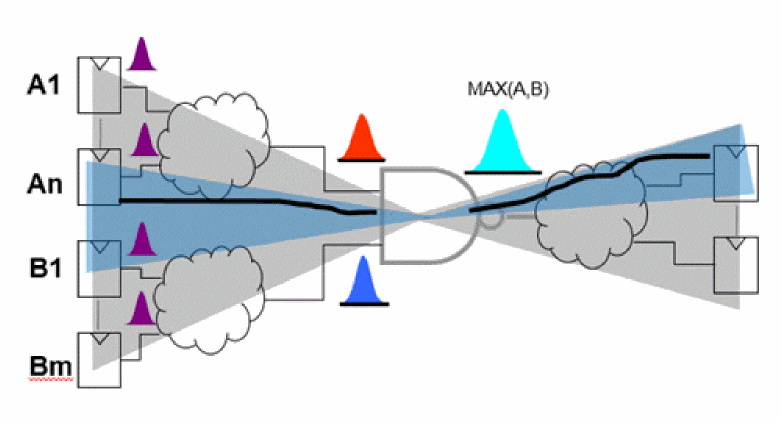
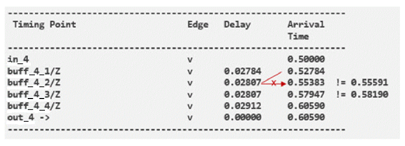
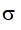
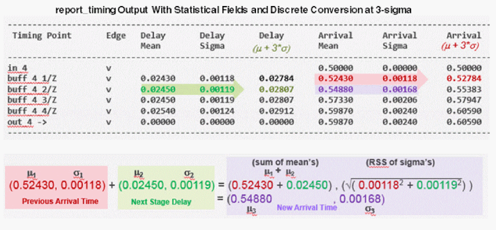
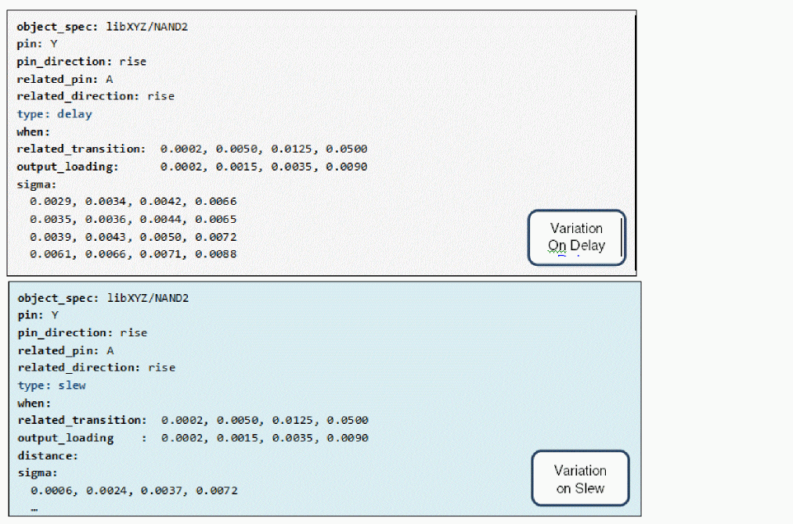
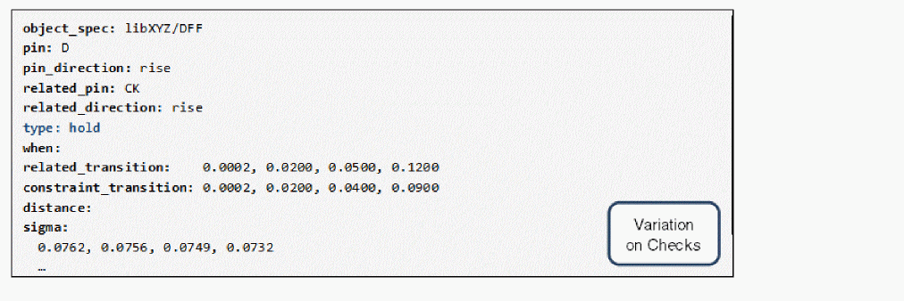

SOCV Data Flow
SOCV analysis requires only the addition of variation libraries to the typical timing sign-off and closure configuration. Variation data can be provided either as a Cadence SOCV library or as Liberty Variation Format (LVF) library. Tempus fully supports both library formats including modeling for variation on delay, transition, and constraints.

Reading Variation Library Data
Tempus provides both a single-corner and MMMC use model, which can accommodate SOCV or LVF format variation libraries.
In single-corner mode, you can use the following parameter to read Cadence SOCV format libraries:
read_lib –socv [list libA.socv libB.socv … ]
To read Liberty libraries with integrated LVF data, you should read the library in the same manner as a non-LVF Liberty timing library.
read_lib [list libA-LVF.lib libB-LVF.lib …]
When working in an MMMC environment, you should specify the variation libraries as part of the create_library_set command in your MMMC configuration file. To incorporate Cadence SOCV format libraries:
create_library_set -name libsetMax
-timing [list
${library_path_1}/lib1.lib
${library_path_1}/lib2.lib
]
-socv [list
${socv_lib_path}/lib1.socv
${socv_lib_path}/lib2.socv
]
To use Liberty libraries with merged LVF data, simply load the Liberty libraries with the create_library_set -timing parameter.
Using AOCV Derating Libraries with SOCV Analysis
Tempus allows the option of using AOCV libraries to provide variation modeling data for the SOCV flow. This method can be used for initial experimentation and testing of the SOCV flow, but lacks the accuracy required for signoff. Using AOCV as a source will provide only variation on delay; no variation on transition or constraints.
To utilize the AOCV bootstrap method, you must set the timing global variables to control transformation of AOCV data. These settings must be made before loading any timing library data.
To enable the transformation process, use the following command:
set timing_library_infer_socv_from_aocv true
The AOCV derating libraries are characterized to a particular sigma value - without additional guidance the transformation process will consider the AOCV library to be at 3-sigma. To define the characterization sigma of the AOCV libraries, you can make the following setting:
set timing_library_scale_aocv_to_socv_to_n_sigma 4.5
You should specify reading the AOCV libraries in the same way as for normal AOCV analysis.
For single-corner mode, use the following command:
read_lib –aocv {myLib.aocv …}
For a MMMC environment, you can make the following settings:
create_library_set -name libsetMax
-timing [list
${library_path_1}/lib1.lib
${library_path_1}/lib2.lib
]
-aocv [list
${aocv_lib_path}/lib1.aocv
${aocv_lib_path}/lib2.aocv
]
SOCV Analysis
The SOCV analysis is essentially an optimized, single parameter statistical analysis, that is built on the underlying Tempus SSTA analysis engine. From a user-interface point of view, the software is able to present results in terms of discrete values for delays, arrivals, and slacks. The interface can also show statistical representation of data.
Enabling SOCV Analysis
The SOCV analysis can be enabled using the set_analysis_mode -socv parameter, as shown below:
set_analysis_mode -socv true -analysisType onChipVariation -cppr both
During arrival and required timing propagation, timing data values are represented concurrently by statistical mean and sigma values. At the output of multi-input gates, the statistical arrival times must be merged in a conservative operation. There are several options for controlling the statistical Max operation.

Selection of the Max operation can be controlled by making the following setting:
set timing_socv_statistical_min_max_mode mean_and_three_sigma_bounded
In this mode, the worst-case calculations of mean value and standard deviation are performed separately.
SOCV Analysis Reporting
Reports in SOCV analysis mode will, by default, present timing data in discrete numbers rather than as statistical quantities. If desired, the timing report can be configured to report the statistical mean and sigma of the various timing data. The format of the timing report can be customized by a combination of global settings and report_timing –format options.
All the timing calculations are performed in the statistical domain. For example, adding delays along a path to determine an arrival time calculation of slack-based on subtraction of arrival and required times. Discrete representations of these values are computed as mean + n*sigma – where n is typically 3.0.
Path Reporting With Discrete Values
The default timing report is configured to report timing quantities as discrete numbers rather than as statistical quantities. The report_timing fields: slew, delay, and arrival will still report discrete numeric values.
As a result of calculating arrival times in the statistical realm, adding the current delay to the previous arrival will generally not add up exactly to the next arrival time in the report:

The statistical mean and sigma representation of timing data is converted to discrete values by the formula: mean + n-sigma, where n is a user-specifiable value. To control the sigma multiplier, you can use the set_socv_reporting_nsigma_multiplier command. This command supports n-sigma specification per view per setup/hold combination.
To apply sigma multiplier to the specified view in setup mode, use the following command:
set_socv_reporting_nsigma_multiplier -setup 2.5 -view std_max_setup
Path Reporting with Statistical Data
The report_timing command now supports additional statistical report fields when operating in SOCV mode.
- The delay_mean and delay_sigma fields provide statistical data for each timing arc
- The slew_mean and slew_sigma fields provide data for transitions
- The arrival_mean and arrival_sigma fields provide the statistical information for arrival timing
The conversion of statistical quantities in the report to discrete values is computed by:
- New mean is the sum of the means: µ3 = µ1 +µ2
-
New sigma is the root-sum-squared of sigmas:

3 = 1^2 +
1^2 +  2^2
2^2

Summary Section Reporting
The summary section of the report_timing report is where the final arrival and required times are calculated, and the path slack is determined. Other quantities such as CPPR, Uncertainty, and Setup/Hold checks values are also accounted in this section’s calculations. Like the detailed path report, all calculations are initially performed using statistical arithmetic of the mean and sigma values. The discrete representations of these values are reported based on the via mean +n-sigma conversion.
By default, the report_timing command output will display discrete representations of the data in the summary section of the report. For example,
report_timing -from [all_reg] -to [all_reg] > socv_nonverbose.rpt
###############################################################
Path 1: MET Setup Check with Pin lsi/A1/CP
Endpoint: lsi/A1/D (v) checked with leading edge of 'clk2'
Beginpoint: lsi/A15/Q (v) triggered by leading edge of 'clk2'
Path Groups: {clk2}
Other End Arrival Time 6.012
- Setup 0.021
+ Phase Shift 20.000
+ CPPR Adjustment 0.006
= Required Time 25.995
- Arrival Time 6.080
= Slack Time 19.921
Clock Rise Edge 6.000
+ Clock Network Latency (Prop) 0.019
= Beginpoint Arrival Time 6.019
-----------------------------------------------------------------------
Instance Arc Cell Delay Arrival Required
Time Time
----------------------------------------------------------------------
lsi/A15 CP ^ - - 6.019 25.951
lsi/A15 CP ^ -> Q v TG_P45 0.065 6.080 26.003
lsi/A1 D v TG_P45 0.000 6.080 26.003
----------------------------------------------------------------------
To enable the display of related statistical representation of data in the summary section, you can set the following global variable to true:
timing_report_enable_verbose_ssta_mode
With this setting, additional details will be added to the report_timing summary section. The current “n” value for n-sigma conversion is shown, along with the mean and sigma components for each data value. For example,
report_timing -from [all_reg] -to [all_reg] > socv_verbose.rpt
###############################################################
Path 1: MET Setup Check with Pin lsi/A1/CP
Endpoint: lsi/A1/D (v) checked with leading edge of 'clk2'
Beginpoint: lsi/A15/Q (v) triggered by leading edge of 'clk2'
Path Groups: {clk2}
Other End Arrival Time 6.012 (-3.00S) | 6.014 | 0.001
- Setup 0.021 (+3.00S) | 0.011 | 0.003
+ Phase Shift 20.000
+ CPPR Adjustment 0.006 (+3.00S) | 0.000 | 0.002
= Required Time 25.995 (-3.00S) | 26.003 | 0.003
- Arrival Time 6.080 (+3.00S) | 6.067 | 0.004
= Slack Time 19.921 (-3.00S) | 19.936 | 0.005
Clock Rise Edge 6.000
+ Clock Network Latency (Prop) 0.019 (+3.00S) | 0.014 | 0.002
= Beginpoint Arrival Time 6.019 (+3.00S) | 6.014 | 0.002
---------------------------------------------------------------------------
Instance Arc Cell Delay Arrival Required
Time Time
-----------------------------------------------------------------------
lsi/A15 CP ^ - - 6.019 25.951
lsi/A15 CP ^ -> Q v TG_P45 0.065 6.080 26.003
lsi/A1 D v TG_P45 0.000 6.080 26.003
-----------------------------------------------------------------------
Sample Initialization and Configuration Scripts
Single-Corner Use Model (non-MMMC) - SOCV Native Libraries
set timing_socv_statistical_min_max_mode three_sigma_bounded
set_socv_reporting_nsigma_multiplier -setup 2.5
set timing_report_enable_verbose_ssta_mode true
set report_timing_format {timing_point edge cell slew load \
delay_mean delay_sigma delay \
arrival_mean arrival_sigma arrival}
read_lib ${LIB_DIR}/standard.lib
read_lib -socv [list ${LIB_DIR}/socv/standard.socv]
read_verilog ./test.v
set_top_module test
read_sdc ./test.sdc
set_analysis_mode -socv true -cppr both
report_timing
Single-Corner Use Model (non-MMMC) - LVF Native Libraries
set timing_socv_statistical_min_max_mode three_sigma_bounded
set_socv_reporting_nsigma_multiplier -setup 2.5
set timing_report_enable_verbose_ssta_mode true
set report_timing_format {timing_point edge cell slew load \
delay_mean delay_sigma delay \
arrival_mean arrival_sigma arrival}
read_lib ${LIB_DIR}/standard-lvf.lib
read_verilog ./test.v
set_top_module test
read_sdc ./test.sdc
set_analysis_mode -socv true -cppr both
report_timing
Single-Corner Use Model (non-MMMC) - AOCV Bootstrap Mode
When running in AOCV bootstrap mode, load the AOCV libraries. Before loading any library information, you must ensure that the required timing library global variables have been set.
set timing_library_infer_socv_from_aocv true
set timing_library_scale_aocv_to_socv_to_n_sigma 3
set timing_socv_statistical_min_max_mode three_sigma_bounded
set_socv_reporting_nsigma_multiplier -setup 2.5
set timing_report_enable_verbose_ssta_mode true
set report_timing_format \
{timing_point edge cell slew load \
delay_mean delay_sigma delay \
arrival_mean arrival_sigma arrival}
read_lib ${LIB_DIR}/standard.lib
read_lib -aocv [list ${LIB_DIR}/aocv/standard.aocv]
read_verilog ./test.v
set_top_module test
read_sdc ./test.sdc
set_analysis_mode -socv true -cppr both
report_timing
MMMC Use Model Using Native SOCV or LVF Libraries
In MMMC configurations, library data is provided through a MMMC library set object, using the create_Iibrary_set command.
In the following examples native SOCV or LVF format library is used to make changes in the MMMC configuration file.
set timing_socv_statistical_min_max_mode three_sigma_bounded
set_socv_reporting_nsigma_multiplier -setup 2.5
set timing_report_enable_verbose_ssta_mode true
set report_timing_format {timing_point edge cell slew load \
delay_mean delay_sigma delay \
arrival_mean arrival_sigma arrival}
read_view_definition ./viewDef.tcl
read_verilog ./test.v
set_top_module test
set_analysis_mode -socv true -cppr both
report_timing
Common MMMC Initialization Script With Native SOCV or LVF
create_library_set -name libsetMax \
-timing [list ${library_path_1}/lib1.lib ${library_path_1}/lib2.lib ] \
-socv [list \
${socv_lib_path}/lib1.socv \
${socv_lib_path}/lib2.socv \
]
Portion of MMMC Configuration Script (viewDef.tcl) for Loading Native SOCV Libraries
create_library_set -name libsetMax \
-timing [list \
${library_path_1}/lib1-lvf.lib \
${library_path_1}/lib2-lvf.lib \
] \
Portion of MMMC Configuration Script (viewDef.tcl) For Loading AOCV Libraries
MMMC Use Model– AOCV Bootstrap Mode
When running in AOCV bootstrap mode, load the AOCV libraries. You must ensure that the required timing library global variablesare set before loading any library information.
set timing_library_infer_socv_from_aocv true
set timing_library_scale_aocv_to_socv_to_n_sigma 3
set timing_socv_statistical_min_max_mode three_sigma_bounded
set_socv_reporting_nsigma_multiplier -setup 2.5
set timing_report_enable_verbose_ssta_mode true
set report_timing_format {timing_point edge cell slew load \
delay_mean delay_sigma delay \
arrival_mean arrival_sigma arrival}
read_view_definition ./viewDef.tcl
read_verilog ./test.v
set_top_module test
set_analysis_mode -socv true -cppr both
report_timing
MMMC Initialization Script for AOCV Bootstrap Mode
create_library_set -name libsetMax \
-timing [list \
${library_path_1}/lib1.lib \
${library_path_1}/lib2.lib \
] \
-aocv [list \
${aocv_lib_path}/lib1.aocv \
${aocv_lib_path}/lib2.aocv \
]
Variation Library Formats
The Cadence SOCV library format and the standardized Liberty Variation Format (LVF) provide essentially the same information: variation sigma for delay, transition, and constraints per arc, indexed by load and slew.
Liberty Variation Format (LVF)
The detailed specifications of Liberty LVF for variation on delay and transition are available from OpenSource Liberty Version 2013.12.
cell (cell_name) {
ocv_derate_distance_group: ocv_derate_group_name;
...
pin | bus | bundle (name) {
direction: input | output;
timing() {
...
ocv_sigma_cell_rise(delay_lu_template_name){
sigma_type: early | late | early_and_late;
index_1 ("float, ..., float");
index_2 ("float, ..., float");
values ( "float, ..., float", \
..., \
"float, ..., float");
}
ocv_sigma_cell_fall(delay_lu_template_name){
sigma_type: early | late | early_and_late;
index_1 ("float, ..., float");
index_2 ("float, ..., float");
values ( "float, ..., float", \
..., \
"float, ..., float");
}
...
} /* end of timing */
...
} /* end of pin */
...
Sample Variation on Delay Template from Liberty 2013.12
Cadence SOCV Library Format (.socv)
The SOCV library format is as follows:


The following table describes the SOCV Library Attributes:
Return to top